FOTOGRAMETRÍA AÉREA
CONTENIDO
FOTOGRAFIA AEREA
Aprenderemos a tomar datos por medio de drones, planear misiones, comprobaciones y técnicas de captura
Softwares de reconstrución
Utilizaremos distintos softwares de fotogrametría para procesar los datos capturados.
Procesado de datos
Postprocesado de los modelos generados,análisis y extracción de conclusiones.
FOTOGRAMETRIA
Definicion
Técnica para obtener mapas y planos de grandes extensiones de terreno por medio de la fotografía aérea.
500 BC
Camera obscura (500 BC in China, 350 BC Aristote, 1000 Al-Haytham, 1500 Léonard de Vinci)
~1500
Leonardo Da Vinci, trata de determinar el punto de vista del pintor desde la perspectiva de la pintura.

~1600
Camera lucida (patented by Wollaston in 1806)

1793
Beautemps-Beaupré, hidrografía: mapas de líneas costeras durante las expediciones desde mediciones angulares y de distancia
1826
Niépce, First photography

1836
Daguerrotipo - "regalo para el mundo" de la Academia Francesa
1911
Scheimpflug, primera fotogrametría aérea, fotografías rectificadas.

Emergence of Mathematical Solutions
-
3D pose problem
- 1615 - Snellius
- 1773 - Lagrange
- 1841 - Grunert
-
Epipolar geometry
- 1862 - Terrero
- 1883 - Hauck
- 1899 - Finsterwalder
-
Trifocal geometry
- 1883 - Hauck
-
Motion estimation
- 1880 - Schroter: 4 point problem for coplanar object points
- 1913 - Kruppa: 5 point problem
- 2003 - Nister: first algorithm for the 5 point problem that gives at most 10 solutions
-
3D modeling from a single image
- ~1800 - Laussedat
- 1883 - Hauck
- 1892 - Meydenbauer
-
3D reconstruction from uncalibrated images & projective reconstruction
- 1883 - Hauck
- 1899 - Finsterwalder
-
Camera self-calibration
- 1892 - Meydenbauer
- 1899 - Finsterwalder
FOTOGRAFIA AEREA
Definicion
Análisis de la superficie terrestre mediante el empleo de máquinas fotográficas instaladas a bordo de diversos medios aéreos.
El proceso consiste en el vuelo y captación de fotografías en primer lugar.
Luego dichas imágenes son procesadas mediante programas específicos para la obtención de los modelos 3D y Ortomosaicos.Con este tipo de programas es posible obtener una precisión de hasta 1 centímetro en planimetría gracias a la inclusión, como hemos comentado en el ejemplo, de puntos de apoyo tomados por GNSS topográfico. Los ortomosaicos obtenidos pueden alcanzar hasta 1 centímetro de GSD (Ground Sample Distance), es decir, un píxel de la imagen generada representa un cuadrado de 1 centímetro de lado en la realidad. Precisiones idóneas.
Seguridad
- La seguridad del topógrafo, la ventaja más destacable. Antes, el topógrafo necesitaba poder tomar puntos de acopios de material, por lo que debía ascender hasta la cota más alta de este, recorrer un talud con gran pendiente para poder representarlo, etc. con la posibilidad de resbalar o con el desafortunado resultado de hundirse en el acopio.
Eficiencia
- Mediante el vuelo del drone se pueden conseguir millones de puntos con color; mientras que antes el topógrafo debía ir observando punto por punto, obteniendo solamente unas coordenadas en las que difícilmente podría conseguir 500 puntos por jornada.
Valor visual
- Nace la posibilidad de disponer de un documento gráfico con un histórico en el que se puede apreciar el avance como posible aval a futuras reclamaciones o simplemente para un análisis visual. De esta forma, es posible comparar visualmente la cantidad de material que ha variado en un almacén.
Inmediatez
- Se consigue reducir el tiempo de procesado y, por lo tanto, los costos de trabajo disminuyen. Hace años, los vuelos fotogramétricos mediante aviones específicamente acomodados a este trabajo daban plazos de entrega de aproximadamente 1 mes. Mediante un vuelo de un drone y la toma de puntos de apoyo, este tiempo se reduce a días.
Restricciones
- Está limitada por la ley vigente en España. Actualmente esta distancia viene marcada en 500m de distancia respecto al punto de despegue para un vuelo BVLOS para un drone que se encuentre entre 2 y 25kg.
Altura
- La altura máxima. Al igual que en el punto anterior, la altura máxima está limitada en el ámbito español a 120 metros.
COMO TOMAR LOS DATOS
Debemos realizar un vuelo linear o orbital alrededor del modelo a reconstruir
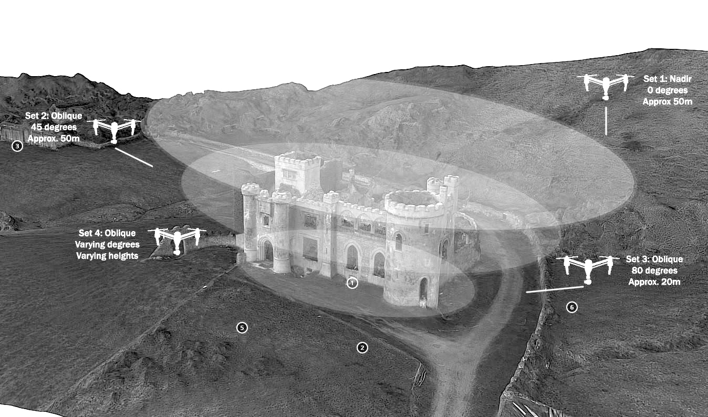Pasos a seguir
- PLANIFICACIÓN DEL VUELO
- APOYO TOPOGRÁFICO

Pasos a seguir
- REALIZACIÓN DEL VUELO
- PROCESADO Y CÁLCULO
TIPO DE TOMA DE DATOS
Es necesario establecer una estrategia adaptada a cada modelo a reconstruir
Planear el vueloMULTIPOSICION

Es necesario que las imagenes tomadas tengan distintos angulos de toma y perspectiva entre ellas para asi poder reconstruir una superficie no bidimensional.
REFERENCIADO

Al superponer fotografias en distintas posiciones los softwares de reconstrucion puede cuadrar matrices de puntos de referencia para asi ubicar primero donde fueron tomadas las fotografias y luego comenzar la reconstruccion.
SUPERPOSICION
Es recomendable que las fotografia se solapen en la imagen tomada al menos un 20-30% siendo recomendable hasta un 60%.


TOMA "CUPULA"
Utilizada cuando existe un elemento principal a reconstruir pero se sigue mantiendo interes en los alrededores.

TOMA "CILINDRICA"
Empleada en modelos de pequeña escala o en torres de gran altura.

TOMA"ORBITAL"
Utilizada cuando existe un elemento principal en la composicion y se pretende la mayor definicion de este y no su entorno.
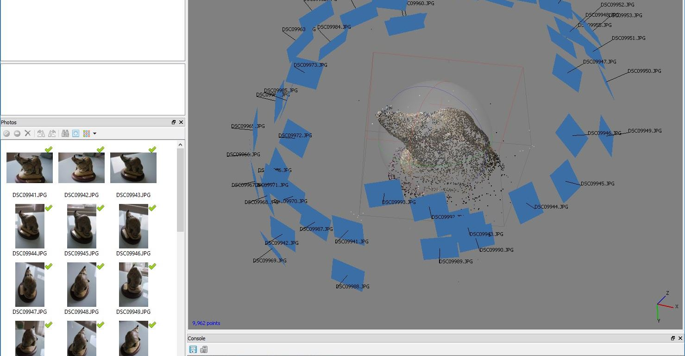TOMA "BARRIDO"
Tipologia utilizada con el doble barrido para obtener modelos de gran precision y detalle

TOMA "EXTENSION"
Utilizada principalmente en agricultura para control de cultivos, suele realizarse con drones tipo ala volante ya que otorgan mayor autonomia

TOMA "ZIGZAG"
Este tipo de toma suele ser la mas utilizada en vuelos manuales y de pequeña extension ya que permite gran solape manteniendo trayectorias simples

MISSION PLANER
Programa de vuelo y programacion de codigo abierto
ArdupilotMULTIPOURPOSE

Este software sirve tanto para programar drones, como ajustarlos, crear missiones y ver en tiempo real su ubicacion
En el apartado flight plan podemos establecer nuestra ruta de vuelo, coordenada y que va hacer en cada posicion.
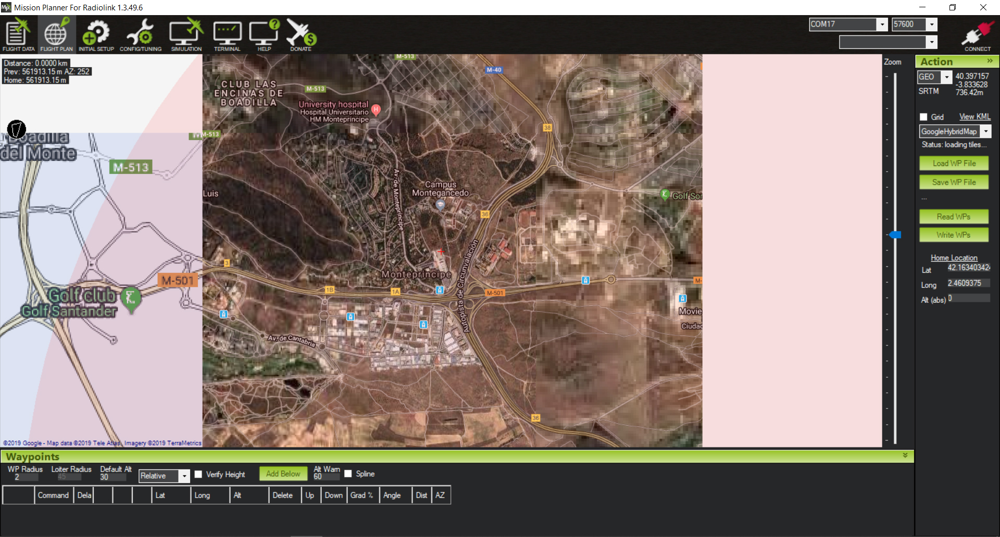Dependiendo del lugar debemos elegir una base cartografica distinta,aqui podemos ver la comparacion de gooogle maps vs bing maps

HOME
Establecer un punto base (home) que servirá de refencia y recuperacion.
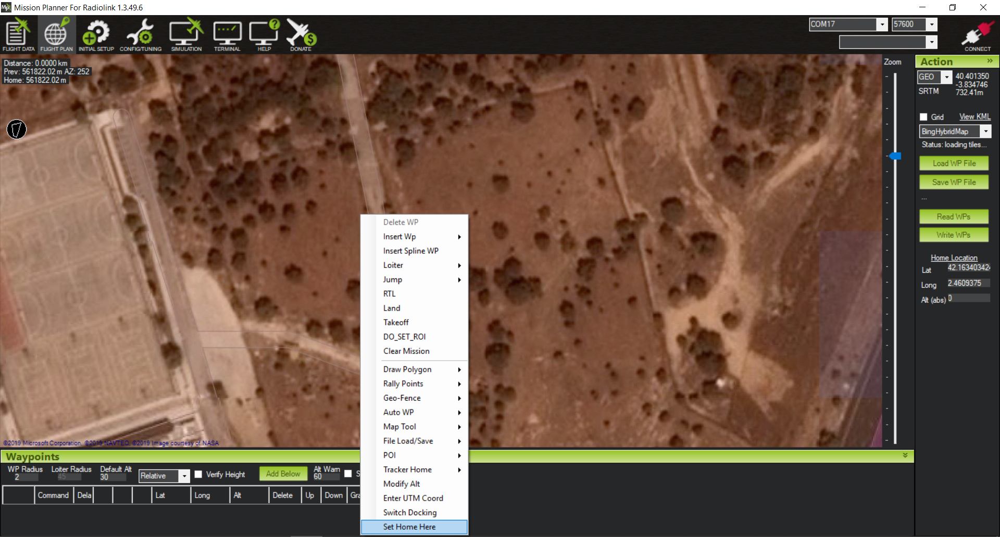Area de escaneado
Dibujar un poligono de la que será nuestra aera a escanear.

AUTO WAYPOINT
Boton derecho autowp y en este caso utilizaremos "survey".

Menu camara
Ajustar la camara utilizada,overlap,altura y tipo de recorrido

WP´S EXPORT
Comprobar los waypoints y guardar el archivo en el dron
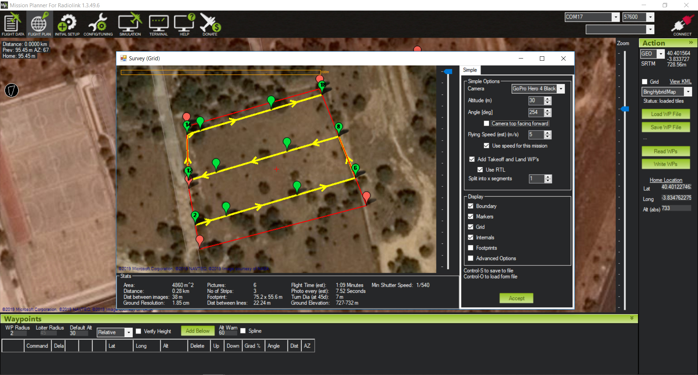RECONSTRUCION
Definicion
Marco fotogramétrico de visión artificial para reconstrucción 3D y seguimiento de cámaras.
Meshroom/AliceVision
Meshroom es un software gratuito de fotogrametría de código abierto con una hermosa interfaz de usuario. Está construido sobre un marco subyacente llamado AliceVision, que es el resultado de la cooperación entre múltiples Universidades y laboratorios.
Meshroom DownloadInterfaz sencilla e intuitiva
La interacción básica es tan simple como es posible. Arrastre y suelte las imágenes en la ventana de Meshroom, presione START y espere a que termine el modelo.
Dos pasos- Drag and Drop

reconstrución standart
Lo más probable es que utilices la reconstrucción estándar cuando proceses fotos tomadas anteriormente en el exterior y no puedes simplemente tomar más de ellas. Suponemos que ya tomó todas las fotos necesarias, llegó a casa y ahora desea reconstruir el modelo 3D.
el flujo de trabajo es muy simple
- Copia todas las imágenes a una carpeta en tu disco duro
- Arrastre y suelte la carpeta (o las imágenes individuales) en la ventana de Meshroom
- Guarde el proyecto usando Archivo - Guarde en un destino de su agrado (de lo contrario, la reconstrucción se almacenará en una carpeta temporal)
- Presione Iniciar o haga clic con el botón derecho en el nodo Estructura desde movimiento (SFM) y presione Calcular
- Espera tomandote un café
Si observa que se descartó un número significativo de imágenes y la vista previa tiene solo unas pocas cámaras, no tiene mucho sentido continuar con la reconstrucción.

Una vez que finaliza la reconstrucción completa, puede hacer doble clic en el nodo Texturizado para obtener una vista previa de la malla final.

Puede hacer clic derecho en cualquiera de los nodos completados y seleccionar Abrir carpeta. Abra la carpeta de texturas o de malla de filtros para encontrar el archivo de salida en un formato .obj de Wavefront que se usa comúnmente.

Autodesk Recap Photo
Autodesk recap es un software de reconstruction de fotogrametria que opera en la nube, todos los calculos los hacen los servidores de Autodesk.
Autodesk ReCap Photo DownloadInterfaz sencilla e intuitiva

Tiene un interfaz minimalista para hacer todo el proceso al usuario lo mas transparente posible.Solo es necesario subir las fotos al servidor y en unas horas tendremos el modelo listo
Voilá! El modelo ya reconstruido listo para mejorar y exportar
MEJORA
La primera herramienta nos permite modelar el ¨mesh¨ como arcilla para efectuar pequeñas correcciones y arreglos de elementos que no hayan sido reconstruido adecuadamente

El menu inferior nos permite cambiar estilos de visualizacion, wireframe,texturizado,ubicacion de las cámaras y tipos de renderizado.

Con visualizaciones sin texturizar podemos corregir mejor los erroes del modelo y observar y modificar la densidad de la trama.

Con el modelo ya exportado y texturizado podemos trabajarlo y analizarlo en otras plataformas
Agisoft Photoscan
Agisoft PhotoScan es un software de reconstruction de fotogrametria profesional, otorga una gran calidad final e integra multiples postprocesados.
Agisoft DownloadAgisoft Photoscan
INICIO

Procedemos a cargar las bases fotograficas "ADD CHUNCK"
INICIO

Procedemos a adjuntar las fotografias realizadas "add photos"
Primer procesado
Procedemos a iniciar el alineado de las fotografias es un proceso relativamente rapido donde se situan las camaras en el espacio

Camaras alineadas
Ya podemos observar una malla basica donde se han situado las fotografias y una nube de punto basica
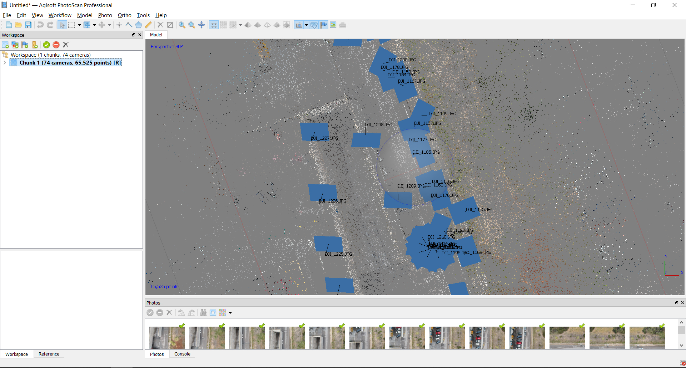En este paso podemos eliminar las camaras que no se han ubicado correctamente o que nos molesten
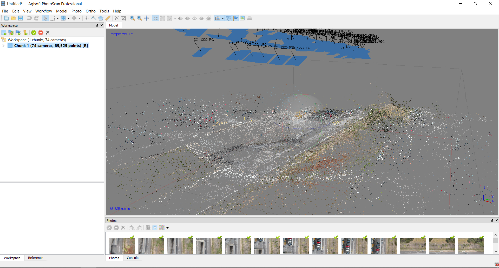Calculo de nube de puntos
La nube de puntos es una representacion de puntos tridimensional en el que cada punto incluye tambien textura. Este paso es el que determina la calidad.
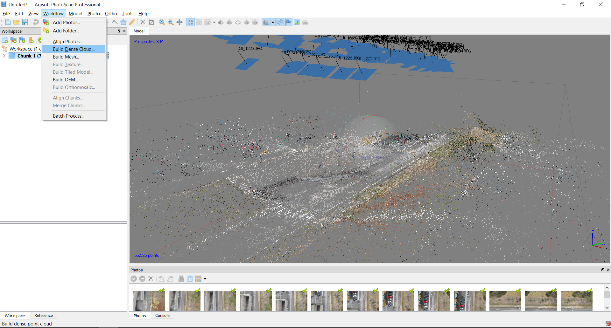Una vez terminado este paso podemos ya ver perfectamente nuestro modelo representado en puntos, muchos editores prefieren trabajar con este formato al ser mas flexible y ligero

Calculo de Mesh
A partir de los puntos podemos crear superficies trianguladas para representar en superficies la realidad "MESH".

Este tipo de representacion es lo que comunmente conocemos por 3D y podemos exportarlo a multiples programas.

GENERATED DATA
- All files
- Obj-Sample
- MTL-Sample
- Image-Sample
- Textures-Sample
- Displacement-Sample
- NormalMap-Sample
{kind=link}
{kind=link}
{kind=link}
{kind=link}
POSTPROCESADO
Definicion
Tratamiento de una serie de datos para extraer modelos,conclusiones o efectos no obtenidos en un primer lugar.
Procesado de datos
Postprocesado de los modelos generados,análisis y extracción de conclusiones.
DATABASE - TO ANALYSIS
A partir del modelo tridimensional texturizado ( mesh o nube de puntos) podemos extraer multiples tipos de datos y mapas
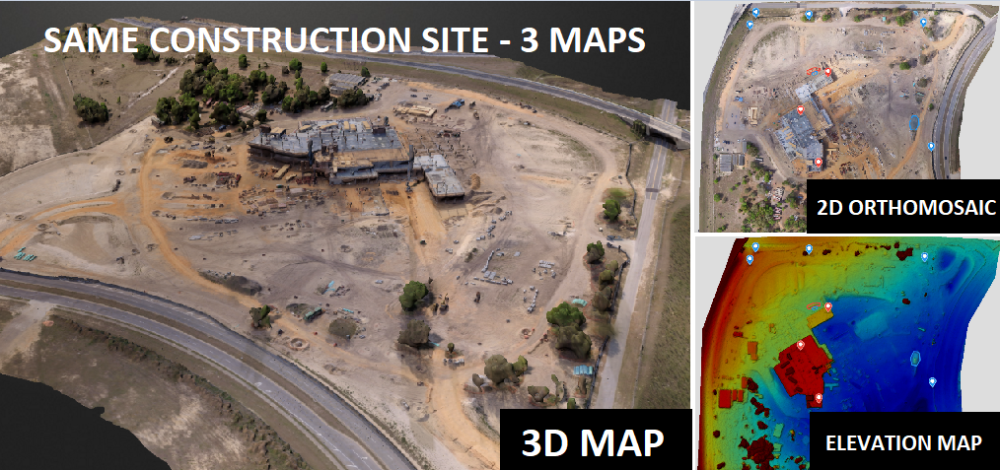Datos geometricos
Podemos hacer analysis tanto de areas y de volumen caracterizando tanto por su geometria como sus tipologia

MEDICIONES
Mediciones y distancias sobre lugares con poca o ninguna información

Visualizaciones
Creacion de fotomontajes o videos interactivos a partir del modelo reconstruido o como base para situar intervenciones
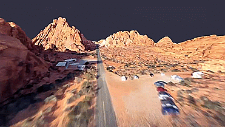Datos en live
Analisis de situaciones en contextos de emergencia para planificacion de intervenciones

Estudios
Analisis de cultivos y vegetaciones
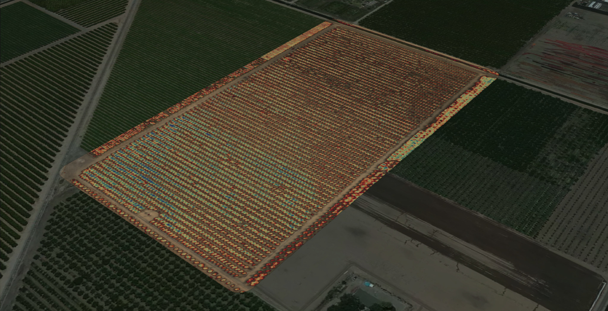D-E-M
DIGITAL ELEVATION MAP ANALYSIS
DEM
DIGITAL ELEVATION MAP es una forma de representacion de nuestro modelo por altura en las cotas Z se cambian los colores de las texturas por colores de altura
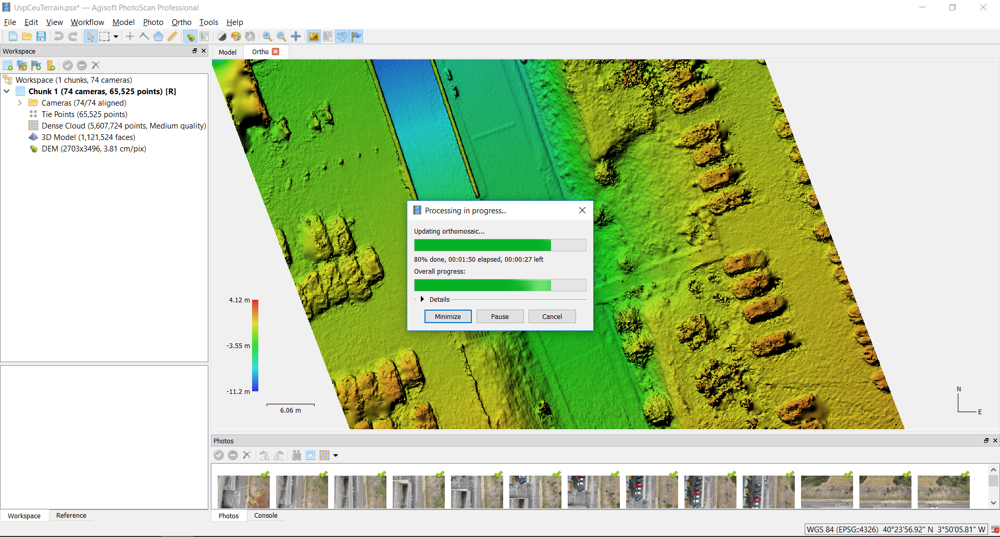ORTOMOSAIC
Representación fotográfica de una zona de la superficie terrestre,en 2d
ORTOMOSAIC
Al igual que con el DEM tambien podemos extraer una composicion fotografica en HD del modelo.(Comunmente conocido como estilo google maps).
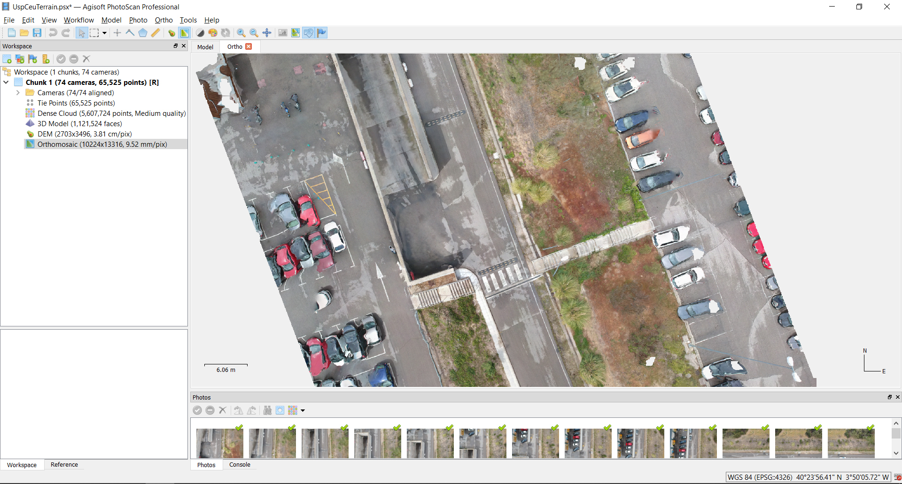Descargas
- Base Fotografica Ceu
- Modelo Cloud Point
- Modelo Mesh
- PluginsGrasshopper fotogrametria
- Scripts de Grasshopper
Instalacion de plugins
Los plugins de Grasshopper que no vienen con un file .exe se instalan manualmente.
- Vamos a Archivo- special folders-ComponentFolder
- Abrir la carpeta especial “Components Folder”
- Copiar los archivos del plugin en esta carpeta
- Anular el bloqueo de cada archivo dandole click derecho -> Propiedades
- Volver a abrir Rhino y Grasshopper
Output-Data
Output-Data
MORE WORKSHOPS
En mi repositorio personal podéis encontrar mas manuales y guías sobre otros workshops